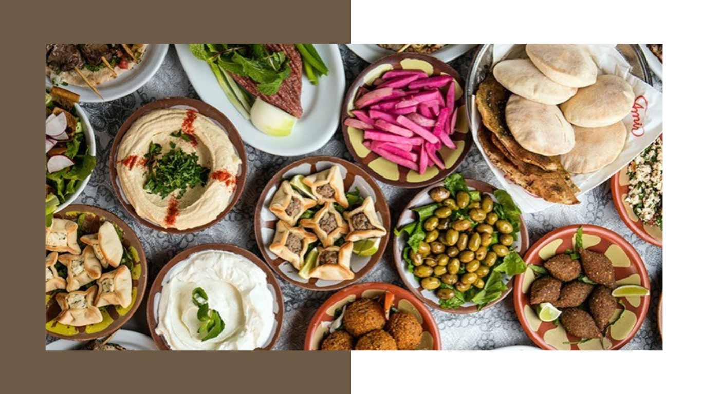
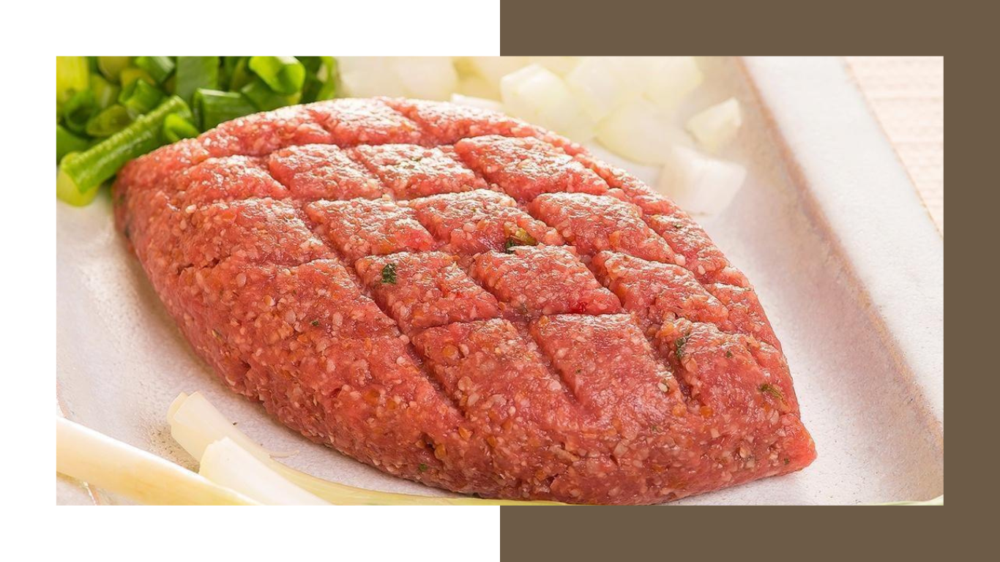
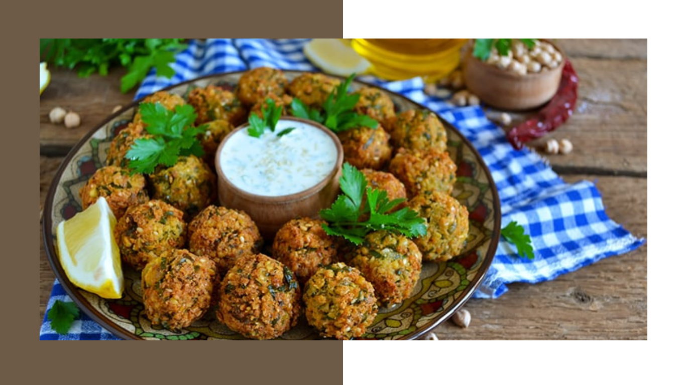
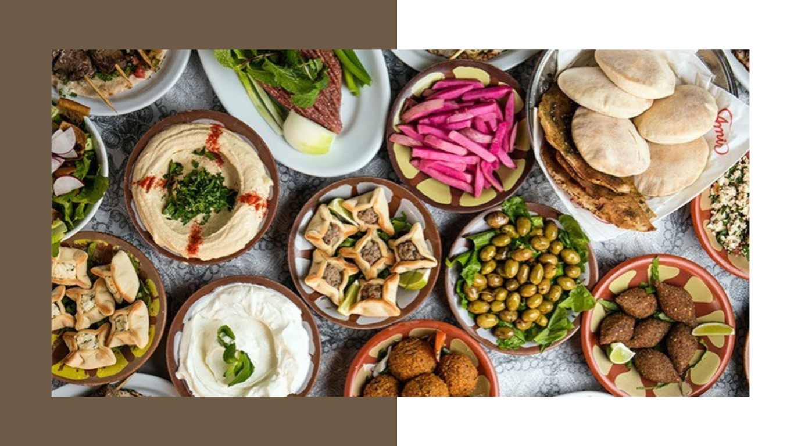
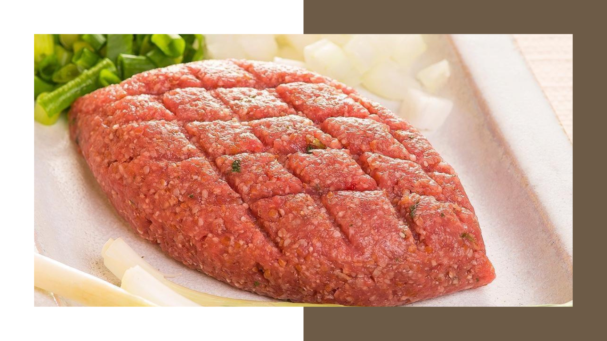
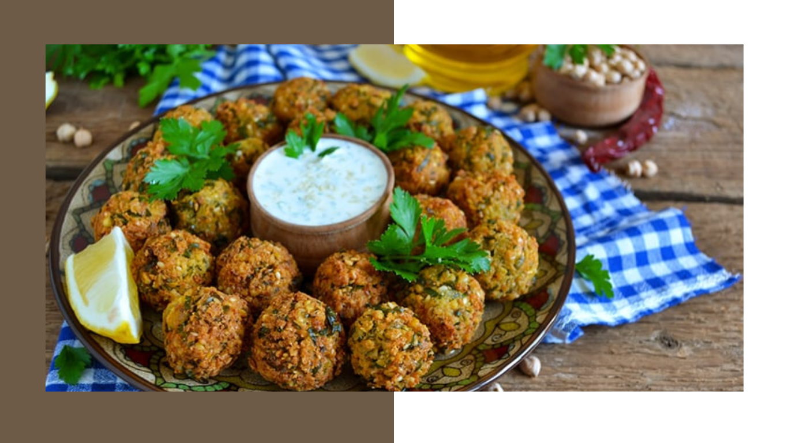
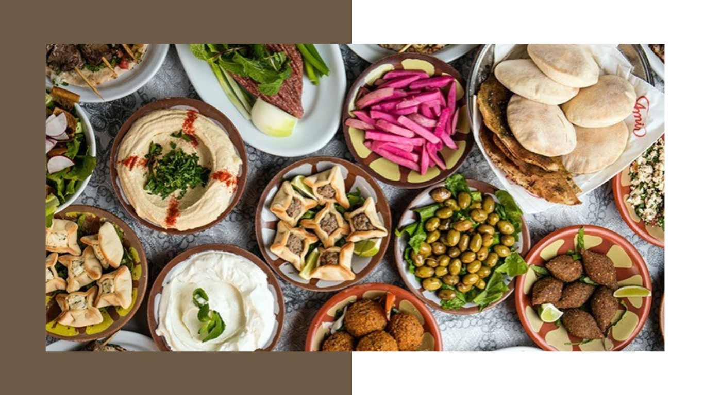
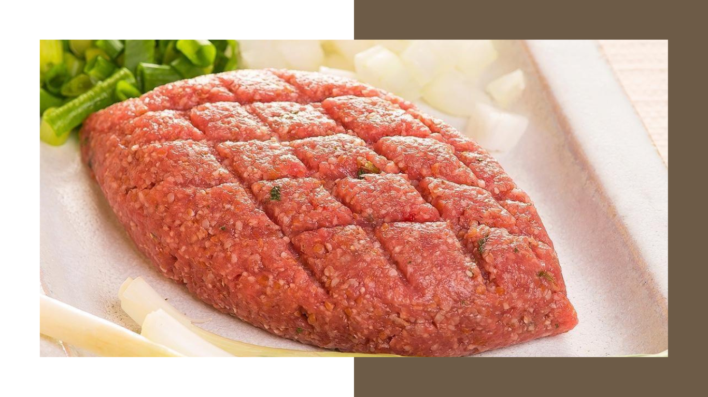
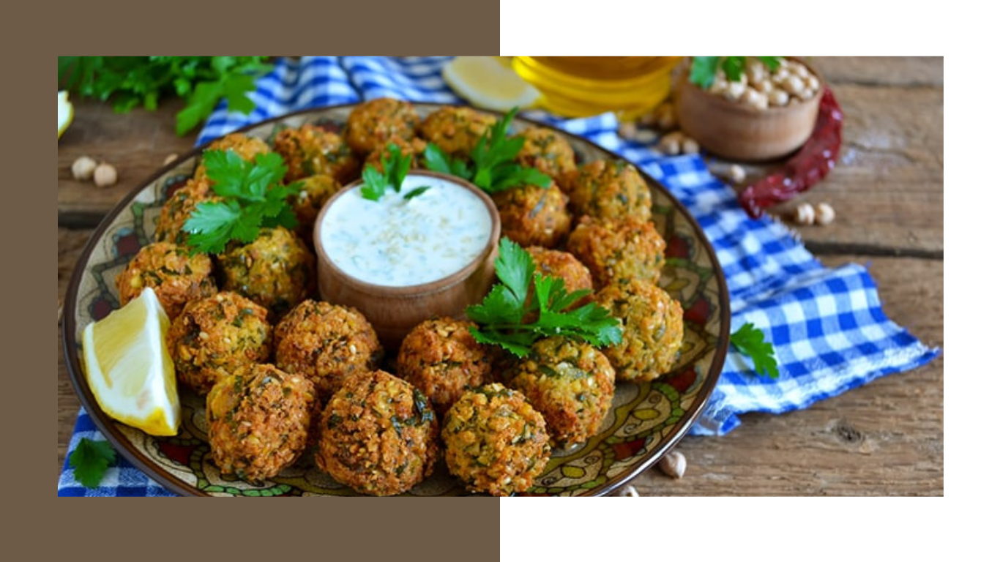

Culinária e Cultura
Pratos deliciosos com histórias interessantes
As especiarias do oriente
Relatos de imigrantes

Pratos Tradicionais
Os queridinhos do Oriente-Médio
Pratos principais
Entradas e molhos
Sobremesas

Pratos Vegetarianos
Halal para qualquer um
Falafel
Charutos de repolho
Shawarma

 




